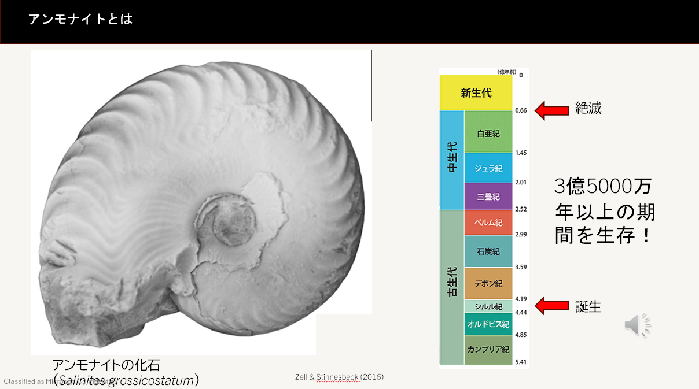
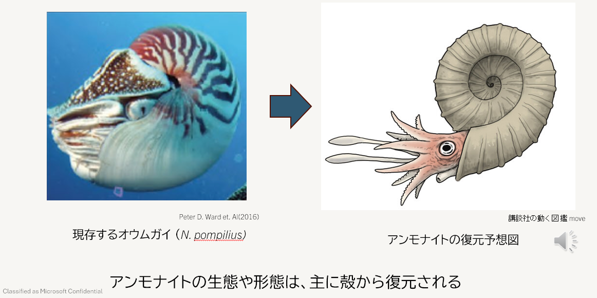

白亜紀のアンモナイトについて
アンモナイトってどんな生き物？
アンモナイトは、イカやタコの仲間(頭足類)です。 古生代の海に登場して、中生代の終わりまで、なんと3億年以上も海で暮らしていました。
その間、世界中の海に広がって、いろんな種類が栄えていたんです。 だから、当時の海の環境や生態系を考えるうえでも、かなり重要な生き物なんですよ。

化石に残るのは「殻」だけ
アンモナイトと聞くと、こんなふうにくるっと渦を巻いた殻を思い浮かべる人が多いんじゃないでしょうか。 この殻は石灰質でできていて硬いので、化石として今でもたくさん見つかっています。
ところが、殻の中に入っていた体(軟体部)のほうは、やわらかいのでほとんど化石に残りません。 そのため、生きていた頃の正確な姿や暮らしぶりには、今でもわからないことがたくさんあります。
想像図はオウムガイが手がかり
じゃあ、あの復元図はどうやって描いているの？というと、今も生きている頭足類のオウムガイなどを参考にして、「たぶんこんな姿だったはず」と推定しているんです。

ただし注意してほしいのが、アンモナイトとオウムガイは別のグループだということ。 殻の形は似ているんですが、分類の上では違う仲間ですし、登場した時期もズレています。 「似ているから同じ」とは言えないところが、この分野のむずかしさであり、おもしろさでもあります。
殻を調べれば、暮らしが見えてくる
そこで大事になるのが、殻そのものです。 殻には、アンモナイトが生きていた間の成長や生活の記録が残っています。 だから殻をじっくり調べれば、どんなふうに大きくなって、どんな暮らしをしていたのか、そのヒントが得られるんです。
小さな殻の化石から、何億年も前の海の様子を想像する。 白亜紀好きとしては、たまらないポイントです。